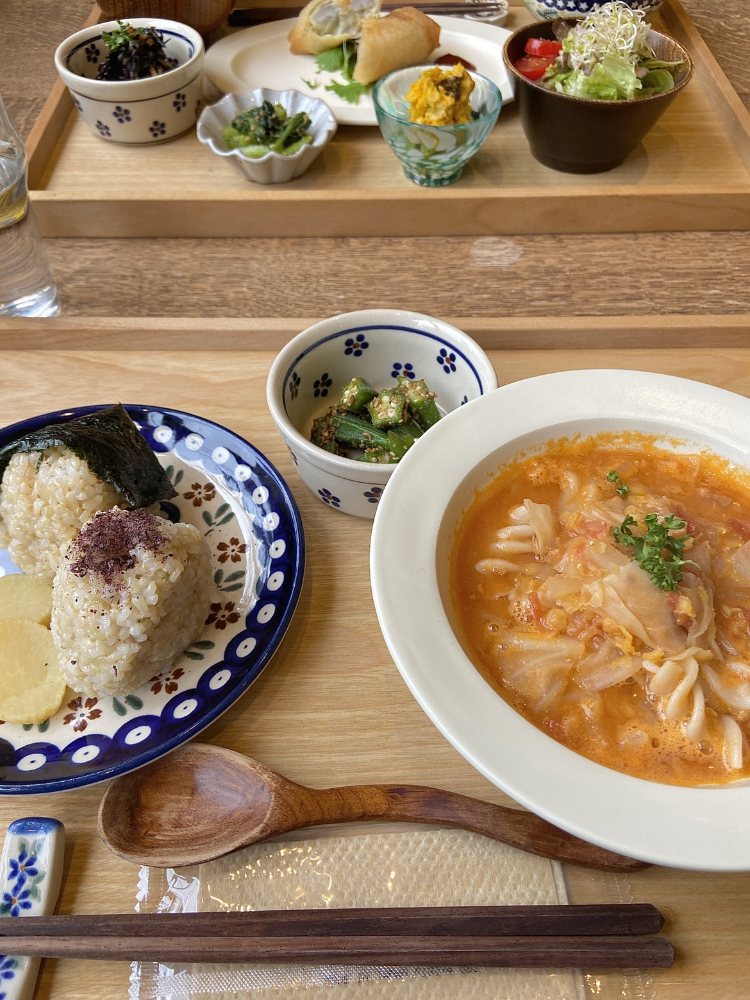
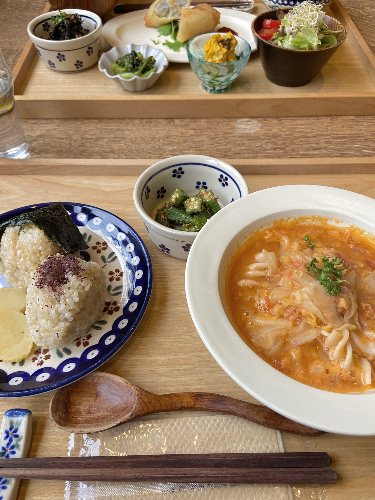

1.［神戸］Kobe harbor kitchen Haji
アメリカ西海岸・カリフォルニアスタイルでとってもおしゃれなお店なのでインスタ映え間違えなしなこのカフェ！
テラス席と一部店内にて、飼い主さんと一緒にご飯を食べることができます。
また、ワンちゃん専用メニューもあるのでワンちゃんたちにとっても嬉しいお店です♪
{kind=link}
{kind=link}
{kind=link}
クリックして写真拡大
□ おすすめポイント
✔️ テラス席、一部店内同伴可✔️ 小型犬・中型犬・大型犬可
✔️ 犬用メニューあり
| 店名 | Kobe harbor kitchen Haji |
|---|---|
| 住所 | 兵庫県神戸市中央区波止場町３－３ |
| 電話 | 050-5289-7070 |
| 営業時間 | 月、火、木～日、祝日、祝前日: 11:00～22:00 （料理L.O. 21:00 ドリンクL.O. 21:00） |
| 定休日 | 水 |
| 詳細 | 公式HPを見る 公式instagramを見る |
2.［大阪］FARMER'S KITCHEN
「THE FARM UNIVERSAL」という関西最大級のガーデニングショップの中にあるカフェです。
ご飯はもちろんですが、周りにはたくさんのフォトスペースがあったり、リードを放して遊ばせることができる「PETCAFE」もあるんです！
{kind=link}
{kind=link}
{kind=link}
クリックして写真拡大
□ おすすめポイント
✔️ インナーテラス席、ペットカフェ同伴可✔️ ノーリードエリアあり
✔️ 犬用メニューあり
| 店名 | FARMER'S KITCHEN |
|---|---|
| 住所 | 大阪府茨木市佐保194-4 |
| 電話 | 072-649-1001 |
| 営業時間 | 平日: 10:00〜17:00 (ピザL.O. 16:00 フード・ドリンクL.O. 16:30) 土日祝: 10:00〜18:00 (ピザL.O. 17:00 フード・ドリンクL.O. 17:30) |
| 定休日 | なし (年末年始休業あり) |
| 詳細 | 公式HPを見る 公式instagramを見る |
3.［大阪］Seren-table
マクロビオティック・ビーガン・オーガニックのお料理が楽しめるオープンキッチンスタイルのお店です。
なんと店内にワンちゃん同伴OKの席が3席あるのであいにくのお天気でも安心です♪
わんちゃん用のこだわられたごはんやおやつもあるので、一緒にランチやカフェも楽しめます！
 

{kind=link}
クリックして写真拡大
□ おすすめポイント
✔️ 店内同伴可✔️ カフェマットの持参不要
✔️ 犬用メニューあり
| 店名 | Seren-table |
|---|---|
| 住所 | 大阪府高槻市天神町1-8-15 CielDieuTakatuki 1F |
| 電話 | 072-669-8607 |
| 営業時間 | ランチ: 11:30〜14:00 カフェ: 14:00〜18:00 (L.O. 17:30) |
| 定休日 | 金 |
| 詳細 | 公式HPを見る 公式instagramを見る |